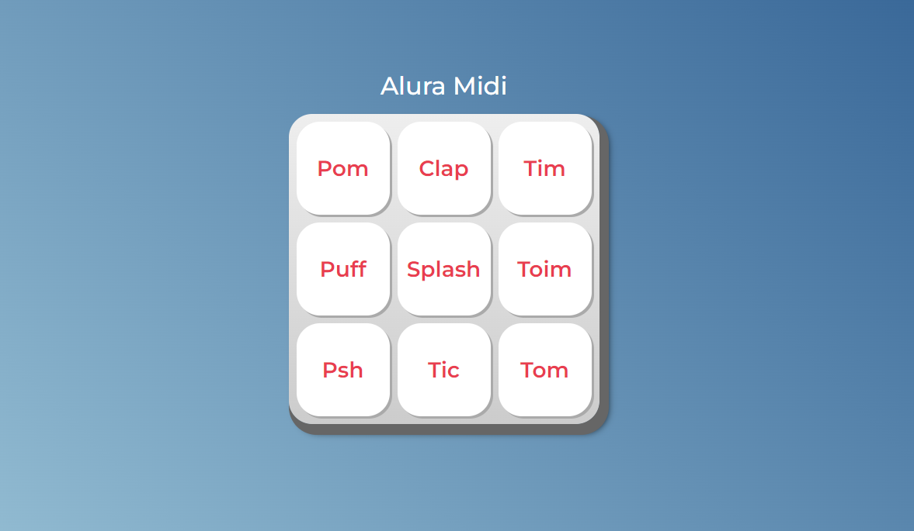

Projeto Alura Midi
O propósito desse projeto era escrever um código de puro JavaScript, para deixar mais dinâmica a página do Alura Midi.
O desenvolvimento desse projeto foi proposto em um dos cursos da Alura. O documento HTML e CSS foi disponibilizado pela instrutora do curso, e assim o único obejtivo do projeto, era fazer com que as teclas emitissem os seus respectivos sons usando a linguagem de programação JavaScript. Nesse projeto foi abordados funções próprias do Js, como o For, o If entre outras.
Clique nos botões do Midi e cada um emitira o seu próprio som, você pode navegar usando o seu MOUSE, ou se preferir, use o seu teclado, usando as teclas: TAB, ENTER e ESPAÇO.Divirta-se!
Minha Opinião
O Midi foi uma experiência bem desafiadora, o código em si foi algo bem mais complexo comparado aos que eu já havia feito anteriormente. Pórem o resultado final ficou dentro do esperado. O código foi algo que eu foquei em comentar bastante para não haver dúvidas pra quem for vê-lo. Espero que tenham gostado do resultado e obrigado por terem visitado a página!